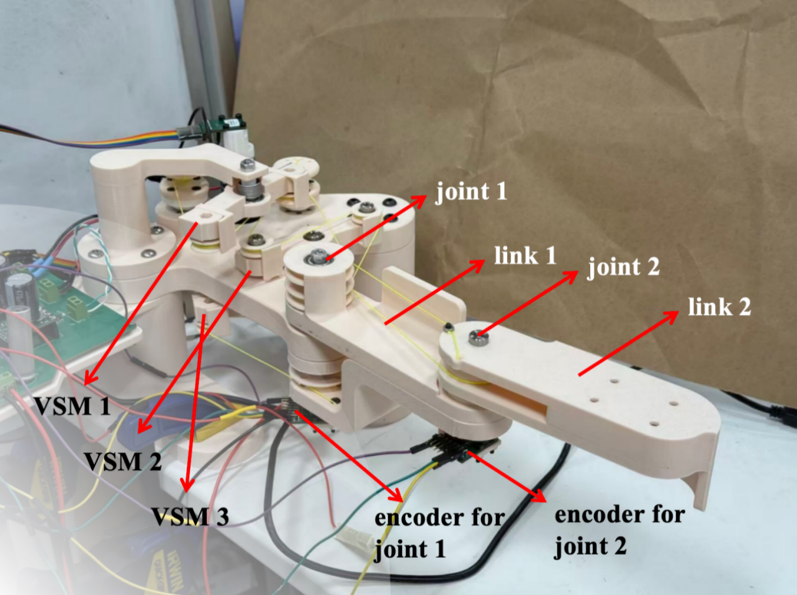
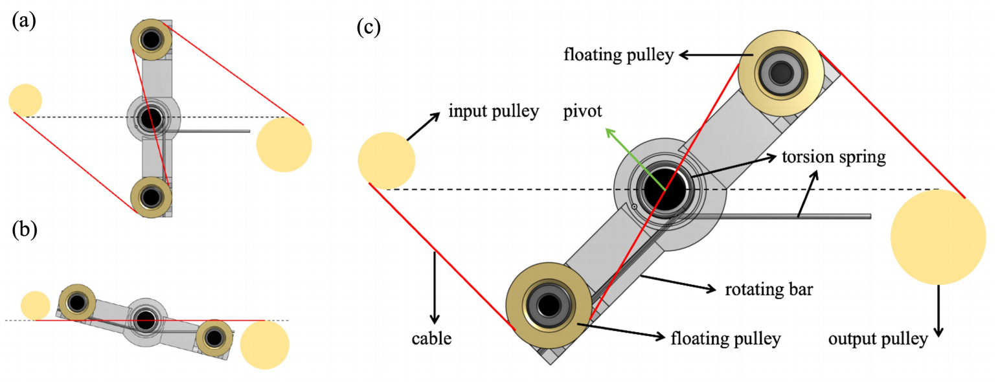

Novel Transmission Employing Kinematic Stiffening and N+1 Actuation


Project Overview
This study addresses the critical conflict in robotic design between high stiffness for precision and compliance for safety. We developed a novel method to modulate the intrinsic mechanical stiffness of a robotic mechanism, enabling it to transition between a "soft" state for safe human interaction and a "stiff" state for high-load tasks.
The photograph on the left shows the physical prototype (Figure 1), while the interactive CAD model on the right lets you explore its mechanical design. Drag the model to rotate it, and scroll or pinch to zoom. Use Reset view to return to the starting viewpoint.
Key Innovation: Variable Stiffness Mechanism (VSM)

The core of this design is a non-linear transmission mechanism based on tension-induced geometric stiffening.
- Working Principle: A rotating bar with floating pulleys is constrained by a torsion spring. As cable tension increases, the bar rotates, reducing the effective cable length and geometrically increasing the stiffness.
- Result: This allows for a wide dynamic range of stiffness using simple, passive mechanical components.
The Relationship between cable tension (T) and change in cable path length (∆L)
Theoretical Analysis:

Experiment:

System Architecture & Performance
We integrated this VSM into a 2-DoF robotic manipulation using an N+1 cable-driven actuation scheme (3 cables driving 2 joints).
- Hybrid Control Strategy: The positions of the two joints q1,des, q2,des are controlled by PID closed-loop control, while the co-activation force fb (shared internal tension of the cables) is under open-loop control. Three parameters can be controlled independently.
The experiment has validated that, by controlling the co-activation force fb, we can control the system’s overall stiffness. Therefore, the overall stiffness of the system can be controlled independently of its position.

- Experimental Validation: A physical prototype was fabricated and tested. The results confirmed a 7-fold increase in endpoint stiffness (overall stiffness) and a corresponding shift in the system’s dominant natural frequency under co-activation. This shows the system’s ability to effectively modulate compliance on demand.

See the supplementary video below for a demonstration of the prototype and how it was tested.